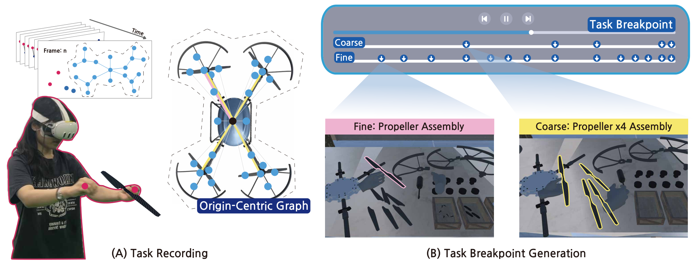
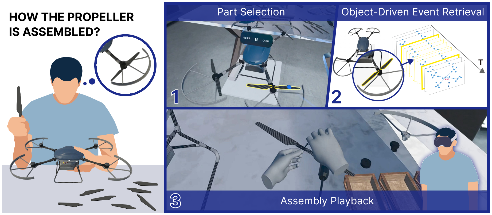
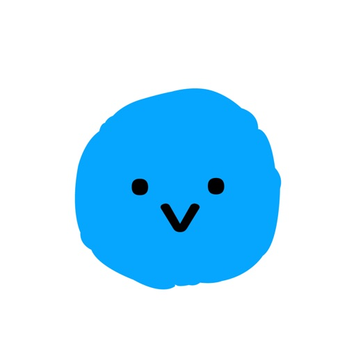

Task Breakpoint Generation
Generating task breakpoints from an Origin-Centric Graph so that VR assembly recordings can be navigated at different levels of detail.
Spatial recordingScene graphsAdaptive playback
Read the paper AR / VR researcher
Ph.D. student in Culture Technology · KAIST
UVR Lab · Advised by Prof. Woontack Woo
I study spatial recording and adaptive playback in AR/VR, with a focus on scene graphs and task-aware navigation.

Generating task breakpoints from an Origin-Centric Graph so that VR assembly recordings can be navigated at different levels of detail.

Using parts of an assembled object as an interface to retrieve related assembly events in mixed reality playback.
IEEE ISMAR 2026
IEEE Transactions on Visualization and Computer Graphics
IEEE Computer Graphics and Applications
IEEE VR Abstracts and Workshops (VRW)
KIISE · pp. 31–33
KIISE · pp. 248–250 Outstanding Paper Award
KIISE
2025 — Present
KAIST · UVR Lab
2023 — 2025
KAIST · UVR Lab
2018 — 2023
Kwangwoon University
Major in System Software · GPA 4.23 / 4.5
Jun — Aug 2026
Visiting Researcher · Embodied Visualisation Group
Host: Prof. Tim Dwyer
Immersive analytics and AR/VR data visualisation.
Jan — Feb 2022
Winter Research Intern
AR test program development for traditional buildings in the H-BIM project.
Best Conference Paper Award · 1st PrizeIEEE International Symposium on Mixed and Augmented Reality
Outstanding Paper AwardKorean Institute of Information Scientists and Engineers
2nd Place · Metaverse Developer ContestK-METAWatch demo ↓
Government ScholarshipFully funded M.S. and Ph.D. studies at KAIST
GCT555
GCT600 / MV600
Unity · C# · C++ · Swift · Python · Xcode · Figma
2026Selected
Doctoral Research Grant박사과정생연구장려금지원
National Research Foundation of Korea (NRF)
Apr 2024 — Present
Participating researcher
Adaptive guidance for meta-object experiences using user context, task structure, and interaction data.
Mar — Dec 2023
Participating researcher

Solo project · iOS app
A personal bucket list app, independently built and launched on the App Store.
Released Oct. 2020
65,000+downloadsAs of Oct. 2026
Creating and editing 3D voxel drawings through bare-hand interaction with AR glasses.
An interactive toy exploring generative AI for mental well-being.